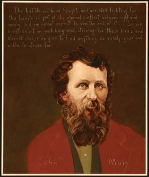

ROBERT SHETTERLY
“The battle we have fought, and are still fighting, for the forests is part of the eternal conflict between right and wrong, and we cannot expect to see the end of it … So we must count on watching and striving for these trees, and should always be glad to find anything so surely good and noble to strive for.” — John Muir